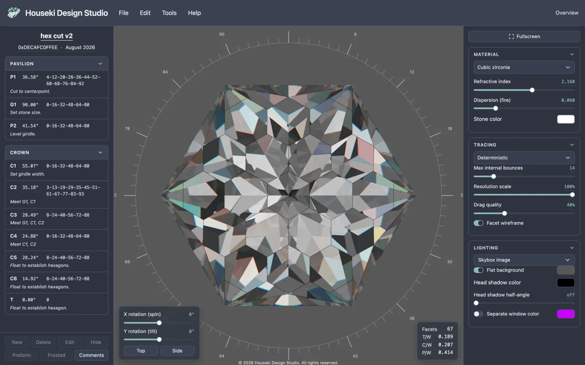

@@LOGO@@
Houseki Design Studio
Houseki Design Studio is a free gem cut designer and faceting planner. Open a faceting design (.gcs, .gem, .asc or .obj) and see the stone path-traced, with dispersion, beside its cutting instructions: every tier's angle, index-gear teeth and notes, pavilion first, then crown, in the order you cut them. Click a tier to find its facets on the stone. It runs entirely in your web browser, with nothing to install.

What you can do with it
-
@@FEATURES@@